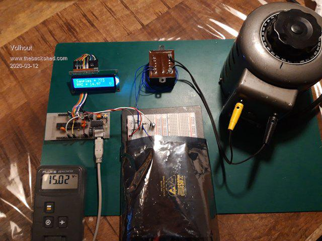
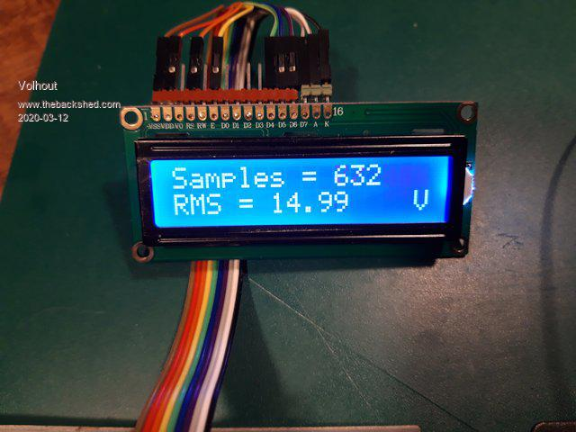

Page History: Measuring RMS (algorythm) using MMBasic
Compare Page Revisions
Page Revision: 2020/07/25 20:14
The RMS value of is the Root-Mean-Square value. It is essential for determining power dissipation in circuits.
Determining RMS value of an AC signal measurement has been a challenge for multimeter designers for years. Since the RMS value of a signal was used to determine disspation, it is not strange that the earliest RMS meters contained a dissipating element, and the RMS value was derived from the temperature rise of the heating element.
Since the advance of semiconductors, and especially analog IC's, RMS was determined by actually multiplying a voltage with itself, filtering, and taking the square root.
To get an acceptable resolution, the analog circuits needed a low noise floor, great linearity. Needless to say these chips where expensive.
With the introduction of digital electronics, and ADC's, life go soo much easier.
Below is a method of implementing RMS measurements on a mains AC signal, with minimal external circuit, in MMBasic on a small micromite.
The name RMS (Root Mean Square) explains exactly what is involved: Take the square root of the mean value of all the measured value to the power two.
1/ take samples from an ADC
2/ calculate the square root of each sample and sum them all up.
3/ divide by the number of samples (summing and divide by number is essentially the mean value)
4/ take the square root of the mean value.
In essence there is no start and end to this process. But if you have a repeating signal (constant sine wave) the RMS of 1 cycle is equal to the RMS of the endless measurement.
OR any number of whole cycles.
This is what is implemented in the MMBasic example.
1/ Read the ADC into an array of measurement samples
2/ by determining the last and first (rising) zero crossing (*), we have a subset of the array that contains samples of a integer number of cycles of the input waveform.
3/ square all values in the subset
4/ sum these values up, and divide by the number of samples
5/ calculate the square root of the result.
6/ add a scaling factor to calibrate the result to real volts.
Needless to say that the accuracy is depending on the number of samples, and the accuracy of the ADC.
The example below achieves a better than 1% accuracy over a 10:1 input voltage range compared to a true RMS voltmeter and a 50Hz input voltage.
It uses a single ADC channel on a PIC32MX170 running MMBasic (micromite), and displays the value on a 16x2 character LCD.
The LCD shows the RMS value, and the number of samples used for the conversion.
The test circuit:

The test circuit uses a 230V-18V transformer to isolate the mains voltage from the micromite, and couples the transformer output AC into the ADC pin.
The ADC input impedance is 10k parallel to 10k, equals 5k ohm.
The input has (120k+5k)/5k = 25x attenuator, so could measure theoretically up to 25 x 3.3v peak to peak. This is 82Vpp.
The transformer output is 18Vac equals 51Vpp loaded, so there is sufficient headroom at the ADC input.
The test setup:

Left top: the LCD dislaying the RMS value
Left mid: the micromite
Left bottom: the true RMS voltmeter to verify the measured result
Mid top: the 230V-18V isolating transformer
Mid bottom: a breadboard with the input circuit (resistors and the capacitor)
Righ top: a variable mains transformer used to verify the RMS result over a wide range of voltages.
Below is the example code. Apart from some variable definitions, and the LCD initialization, the DO-LOOP does the RMS conversion.
The steps described above can easily be recognized.
By changing the array size (the value "Total" is the maximum number of samples in the array) improves accuracy, but lowers the measurement speed.
The CalValue is the actual attenuation of the resistor attenuator (theratically 25 with very accurate resistors).
Accuracy:

The Example code:
'+--------------------------------------------------------------+
'| RMS convertor for MX170 |
'+--------------------------------------------------------------+
' The RMS value of a signal is the R(oot)M(ean)S(quare) value.
' It is calculated by adding up the squares of the input signal
' The mean of these squares is rooted. This process is explained
' in the steps below.
' This example uses the ADC in the PIC32MX170 to measure the
' AC input signal. Output is displayed at a 16x2 LCD.
'---------------------- Defines -------------------------------
ADCpin = 23 ' ADC input pin
Total = 800 ' array size for measuring 220mSec @ 48MHz
Offset = 1.650 ' numeric offset at 3.300V
CalValue = 24.85 ' gain factor attenuator and AC coupling @ 50Hz
Option explicit
'------------------------- Dim Variables --------------------
Dim Sample!(Total)
Dim SumSQ!, Value!
Dim i%,j%,a%
'---------------------- Initialize hardware -------------------
SetPin ADCpin, AIN ' initialize ADC
CPU 48 ' maximum speed for the MX170
'LCD
LCD init 4,5,6,7,2,26
LCD 1,1,"Samples = "
LCD 2,1,"RMS = V"
'--------------------------- Measuring ----------------------
Do
'sample input signal
For i%=1 To Total
Sample(i%)=Pin(ADCpin)-Offset
Next i%
'find zero crossings
i%=0:j%=Total-1
'first zero crossing in array
Do
i%=i%+1
Loop Until(Sample(i%)>0 And Sample(i%+1)<0)
'last zero crossing in array
Do
j%=j%-1
Loop Until (Sample(j%)>0 And Sample(j%+1)<0)
'calculate SQUARES
SumSQ!=0
For a%=i% To j%
SumSQ! = SumSQ! + (Sample!(a%)*Sample!(a%))
Next a%
'calculate MEAN
SumSQ! = SumSQ!/(j%-i%)
'calculate ROOT
Value! = Sqr(SumSQ!)
'display values on 16x2 LCD
LCD 1,11,Str$(j%-i%)
LCD 2,7,Left$(Str$(Value!*CalValue!),5)
Loop